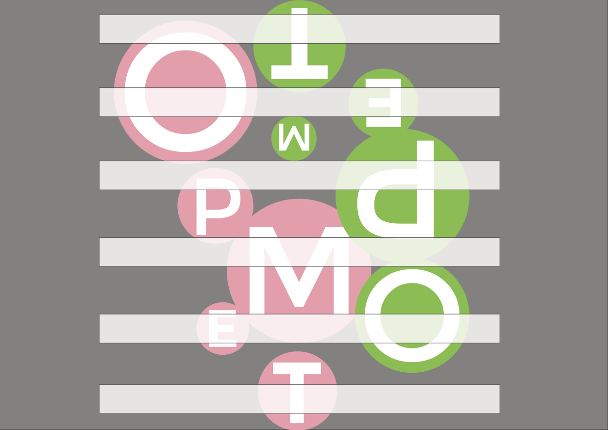
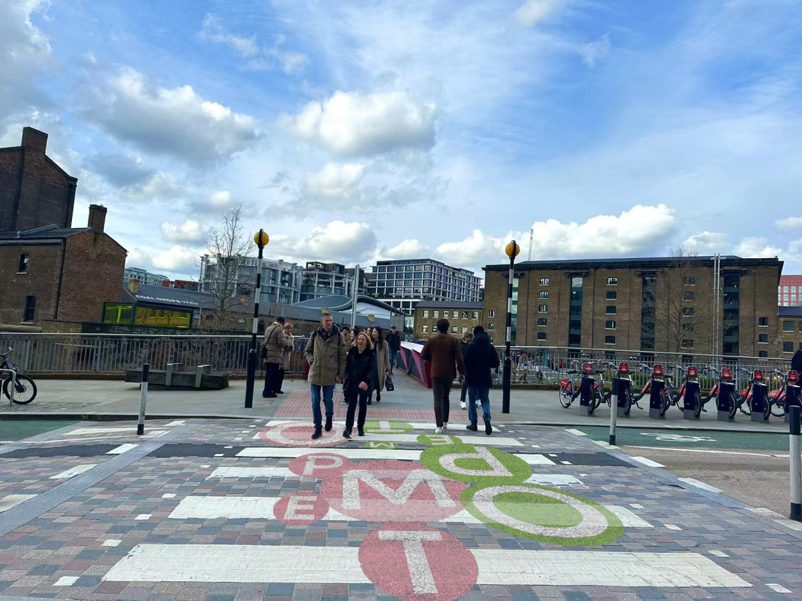
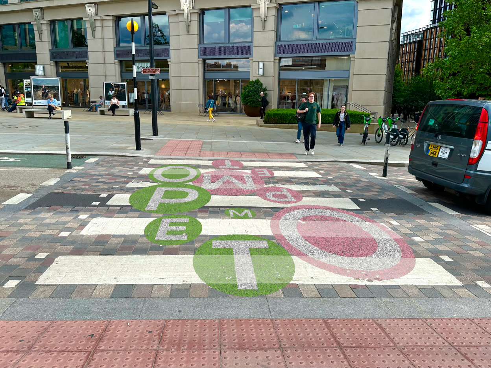
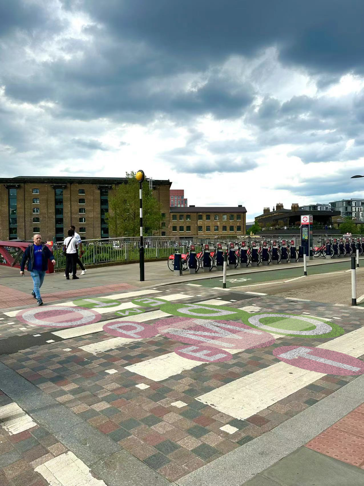
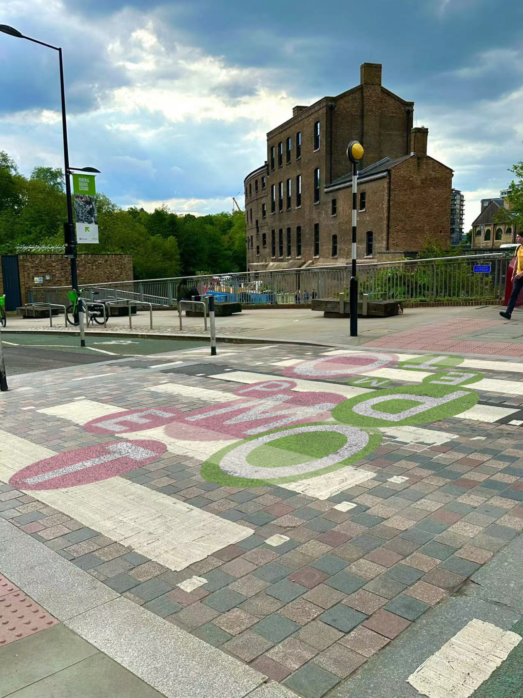
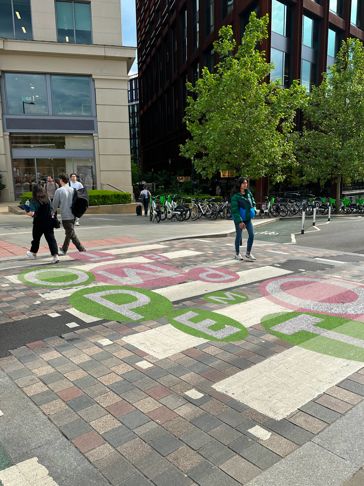

Access All Areas
2024
For the final outcome, I chose pink and green as the two colors because I believe the distinction between the two colors can help manage the flow of pedestrians on both sides. Visually, it won't distract drivers or divert their attention. Although more colors might look better aesthetically, I opted for two colors considering practicality and safety.
In terms of the text, I adjusted "M, O, T" to be below the zebra crossing and modified the transparency of the zebra crossing so that the letters could show through, creating a layered effect.
Additionally, I considered a possible implementation method: using the same paint used for zebra crossings to draw these colorful "TEMPO" letters.
